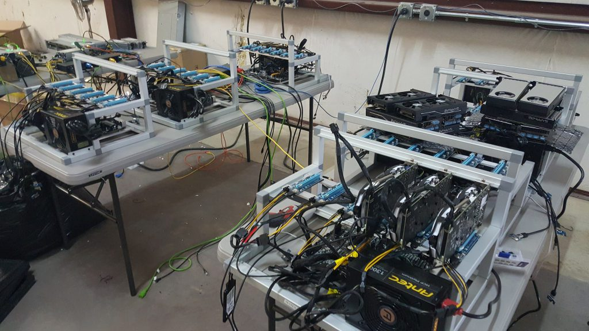

Claymore's Dual Ethereum AMD+NVIDIA GPU Miner
Самый быстрый Ethereum/Ethash майнер с самой низкой комиссией
dcri claymore что это за опция
Что означает парамтер dcri
значение -dcri оказывает значительное влияние на производительность.
-dcri это значение для Decred / Siacoin / Lbry / Pascal или значение точной настройки Ethereum в режиме ETH-only (только Эфириум) ASM.
Значения dcri
Значение по умолчанию равно 30Вы можете настроить это значение, чтобы получить наилучшую скорость добычи Дуал-монеты: Decred / Siacoin / Lbry без снижения скорости добычи Ethereum. Вы также можете указать значения для каждой карты, например, "-dcri 40,90,100". Вы можете изменить интенсивность во время выполнения с помощью клавиш «+» и «-», а также с помощью клавиши «x» выбрать одну видеокарту для регулировки интенсивности.
Примеры использования
Например, по умолчанию (-dcri 30) карта 390 показывает 29 MH/s для Ethereum и 440 MH/s для Decred. Установка -dcri 70 вызывает 24M H/s для Ethereum и 850 MH/ s для Decred.
Используйте эту опцию в режиме ETH-only ASM для тонкой настройки. Если вы не указали опцию «-dcri» в режиме ETH-only ASM, майнер автоматически определит лучшие значения -dcri, вы также можете нажать клавишу «z», чтобы сделать это.
Пример для двух монет в дуал майнинге
EthDcrMiner64.exe -epool eth-eu2.nanopool.org:9999 -ewal 0x1a0e2c4cd699cee12672adc223fdb30b93253eba -eworker Claymore -epsw x -etha 0 -allpools 1 -dpool xvg.eu1.unimining.net:5770 -dwal DPNSdySRg8zFmU6Zcqyo9XKJKDhMm87Xn7.Claymore -dpsw c=XVG -dcoin blake2s -r 0 -dbg -1 -mport 0 -retrydelay 1 -ftime 55 -tt 79 -ttli 77 -tstop 89 -fanmin 30 -dcri 45
pause
В данном примере интенсивность установлена в 45%.
Еще примеры
-dcri 30,40,100 задает значения для трех карт
-dcri, влияние на хэшрейт в Mh/s
Советы
Если это двойной майнинг, то играйте с цифрами, пока не получите хорошую производительность двойного майнинга, не жертвуя при этом своим майнингом Ethereum. Это игра с балансом, чтобы найти "сладкое место". Повторите попытку использования -dcri 21 или -dcri 23 в сочетании с -ethi 8 (опция ethi - это интенсивность для Ethereum).
Вы можете ввести «-ethi 16» в свой bat файл, а затем настроить свои числа «-dcri xx», чтобы найти наилучший баланс для вашей системы.
Пример для дуала ETHEREUM + VERGE (BLAKE2)
Вот что вы можете ожидать от двойного майнинга blake2s и ETH с RX 570 и RX 580, работающих на частоте ядра 1150 МГц/2150 мегабайт памяти:
-dcri 40 - нет падения скорости ETH
RX 570 = 1200 MH/s
RX 580 = 1350 MH/s
-dcri 60 с падением ~ 0.5 MH/s на ETH
RX 570 = 1400 MH/s
RX 580 = 1600 MH/s
 На ферме, состоящей из RX 580, 570 и 590 майнинга в antminerpool, вы можете ожидать ~ 180 - 187 МГц / с на ETH и 7200 - 9300 МГц / с на B2S , при условии, что настройки dcri равны 40 и 50 соответственно для каждой карточки.
На ферме, состоящей из RX 580, 570 и 590 майнинга в antminerpool, вы можете ожидать ~ 180 - 187 МГц / с на ETH и 7200 - 9300 МГц / с на B2S , при условии, что настройки dcri равны 40 и 50 соответственно для каждой карточки.
Эта установка потребляет около 30 Вт электроэнергии , что составляет дополнительно 2 доллара США в месяц при условии, что вы платите около 0,10 долларов США / кВт. Это меньше, чем при двойном майнинге SIA, хотя, благодаря новым ASIC, мы, вероятно, больше не станем заниматься майнингом монет SIA на GPU.
Значение -dcri регулирует , как интенсивно майнер работает на второй монете, которая потенциально может съесть хэшрейт Eth. Для мощнфх карт, таких как 1080 Ti, как правило, есть много возможностей для увеличения dcri без снижения скорости Eth. Прибыль на этих картах может быть увеличена до 60% после настройки. Средние карты, такие как RX 480, вероятно, не увидят большой пользы, и даже слабые карты смогут получить большую выгоду, уменьшив значение.
Эти значения являются приблизительными и могут колебаться в зависимости от ставок оплаты Eth и вторичных монет, поэтому лучше попробовать самим.
Значение по умолчанию -dcri 30 обычно подходит для карт, аналогичных 290/390/480/580. Инструкция в конце.
| Карта | Вторичная монета | −dcri | Эт Хашрейт (MH/s) | Вторичный хэшрейт (MH/s) |
| 1080 Ti | Sia | 150 | 30,5 | 1550 |
| Pascal | 90 | 32 | 950 | |
| Lbry | 80 | 30 | 60 | |
| 1080¹ | Sia | 150 | 22 | 1100 |
| Decred | 210 | 22 | 1540 | |
| Pascal | 100 | 22 | 730 | |
| Lbry | 160 | 22 | 80,5 | |
| 1070 FE² | Sia | 55 | 28 | 515 |
| Decred | 80 | 27 | 720 | |
| Pascal | 35 | 27,5 | 320 | |
| Lbry | 50 | 27 | 37,5 | |
| 1060 3G³ | Sia | 55 | 19 | 350 |
| Decred | 80 | 18,5 | 495 | |
| Pascal | 40 | 18,5 | 245 | |
| Lbry | 30 | 19 | 18,5 | |
| 980 | Sia | 55 | 17 | 340 |
| Decred | 55 | 15,5 | 280 | |
| Pascal | 60 | 16,5 | 275 | |
| Lbry | 45 | 17,5 | 22,5 |
| Карта | Вторичная монета | -dcri | Эт Хашрейт (MH/s) | Вторичный хэшрейт (MH/s) |
| Fury X | SIA | 40 | 30,5 | 1200 |
| 290X | SIA | 27 | 29 | 800 |
Проект Claymore представляет самые последние версии программного обеспечения (исправляет все ошибки и баги предыдущих версий)! Поэтому если у Вас старая версия, мы настоятельно советуем скачать последнюю версию Claymore's по ссылкам ниже, так как с каждым выходом новой версии добыча Эфира становится выгоднее!
Ресурсы для разработчиков
- What is Ether? Read our FAQ
- Browse our source code on GitHub
- Read the documentation or wiki
- Learn Solidity
- See the latest data and network stats
- Download our logo assets
- Want to write about Ethereum? Press inquiries
- switch to the English language.